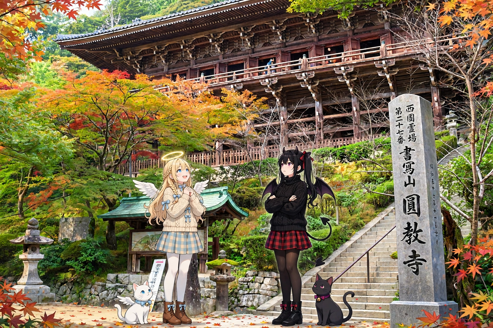
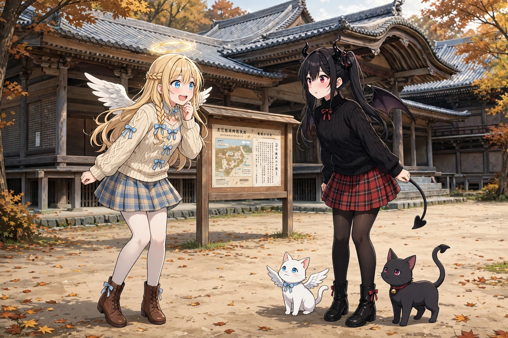
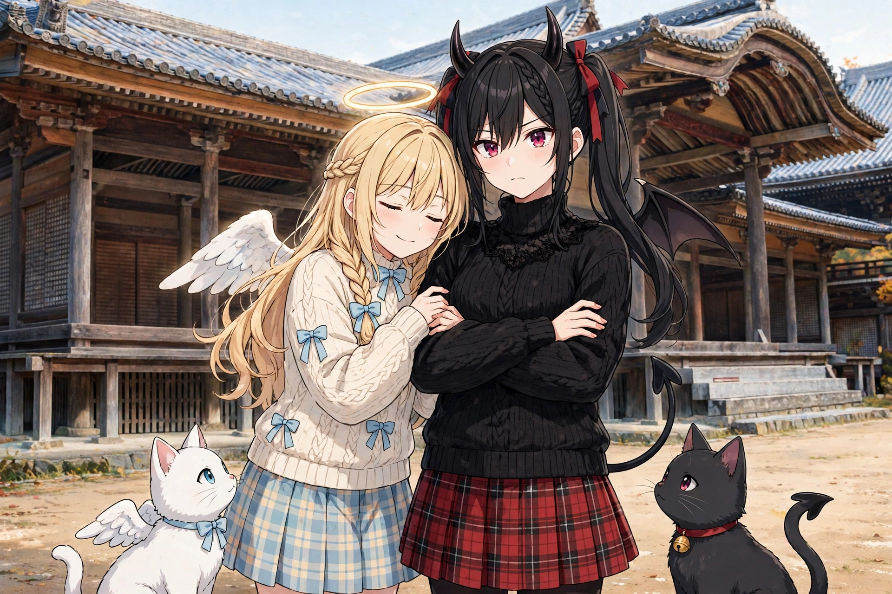
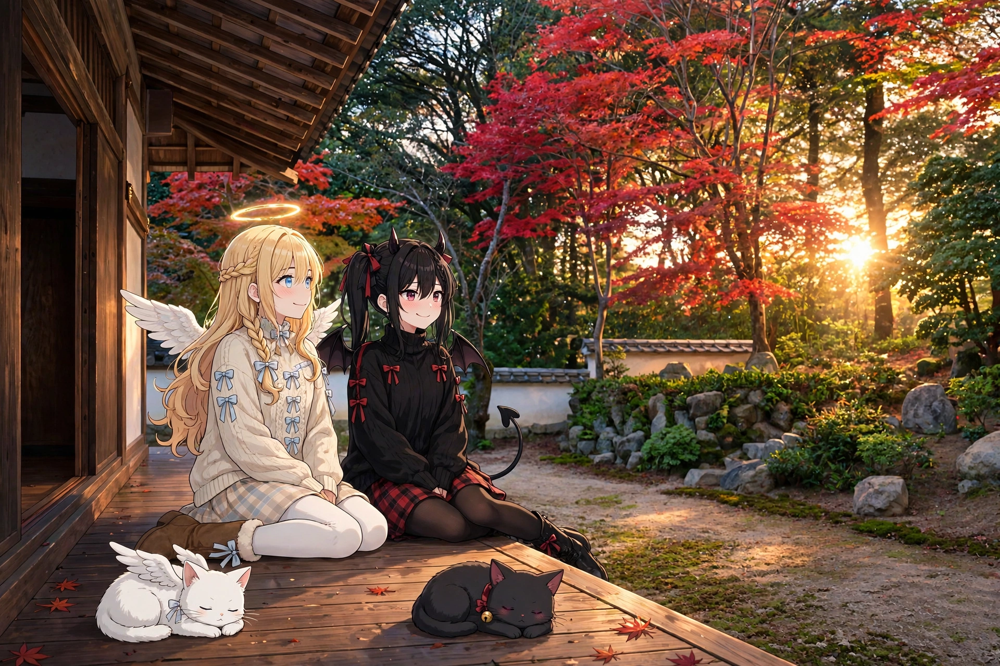

読み切り短編『書写山でラストサムライごっこ』を公開しました
2026年11月25日
読み切り短編『書写山でラストサムライごっこ』を公開しました。世界遺産・姫路城へ出かけたセラフィナとルチアの、白鷺城の一日のお話です。
1. 西の比叡山

姫路城のあと、二人はバスとロープウェイを乗り継いで、書写山へ向かいました。
山の上に広がる圓教寺は、千年以上前に性空上人が開いたお寺で、西国三十三所の第二十七番。「西の比叡山」とも呼ばれる、大きな古刹です。
参道を進むと、崖にせり出すように建つ大きなお堂が見えてきました。摩尼殿です。舞台造りの回廊が、紅葉の海の上に浮かんでいます。
「……お城の次は、空に浮かぶお堂ですか。人間は高いところが好きですね」
「ふん、悪魔は毎日飛んでるけどね。……でも、これはこれで、悪くない眺めだわ」
石碑の前で深呼吸をすると、山の空気は冷たくて、紅葉と土の匂いがしました。
2. 三つの堂

山道を登りきると、ぱっと開けた広場に出ました。
大講堂、食堂（じきどう）、常行堂。三つの大きなお堂が、広場を囲むように建っています。「三つの堂」と呼ばれる場所です。
そして案内板を読んだわたしは、思わず声を上げました。
「ルチア、ここ……映画『ラストサムライ』のロケ地なんですって！」
ハリウッド映画の撮影で、この広場とお堂が使われたのだそうです。千年続くお寺が、ある日は映画の村になっていたなんて。
「……へえ。あの映画の、あの場面が、ここ」
ルチアの目が、少しだけ光った気がしました。
3. ラストサムライごっこ

「じゃあ、やりますよ。名場面の再現です」
「え、なに、ちょっと――」
言い出したのはわたしなのに、ノリノリなのはルチアでした。腕を組んで、顎を上げて、遠くを見る侍の表情。あまりに決まっていて、わたしは思わずヒロインらしく、肩に頭を寄せて目を伏せました。
モコとノワールは、観客みたいにお行儀よく座って見上げています。
通りかかった参拝の方が「あら、お似合いですよ」と笑って、写真まで撮ってくださいました。
「……べ、別に、似合ってなんかないわよ」
ルチアは真っ赤になってそっぽを向きましたが、腕組みは最後まで解けませんでした。本当は、ちょっと嬉しかったのだと思います。
4. 夕日の縁側

ごっこ遊びで笑い疲れて、帰る前に縁側でひと休みしました。
夕日が紅葉を透かして、庭全体が赤く光っています。モコとノワールはもう、丸くなってうとうとです。
「……人間は、古いものを大事にして、そこに新しい物語を重ねるのね。お寺に、映画に、ごっこ遊びに」
「はい。だから何度来ても、新しいんです」
千年続く山の上で、一日だけの小さな映画を撮りました。主演は悪魔で、相手役は天使。観客は猫が二匹。
今日もおつかれさまです。
（了）